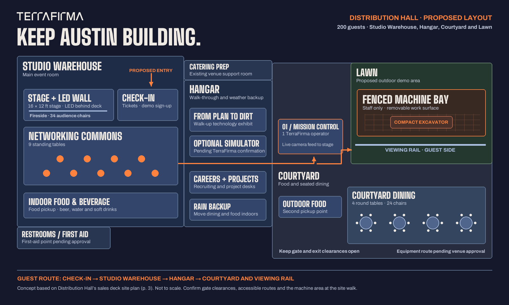

Watch a run
See the operator use the remote station while an engineer explains the screen. Compare the view at the controls with the machine working in the dirt.

TerraFirma Playground · Austin pilot
Drive the machine. Meet the crew.
Explore the planFor one afternoon in East Austin, put TerraFirma’s remote earthmoving technology in front of the people who could build it, operate it, or hire it for a project. Guests watch from the rail, take a coached turn at the controls if approved, then meet the crew behind the work.
Event concept
Turn the lookbook’s TerraFirma Playground into a one-day Austin pilot. Use one working machine, a TerraFirma operator and engineer, and a scored grading challenge guests can see from the rail.
See the operator use the remote station while an engineer explains the screen. Compare the view at the controls with the machine working in the dirt.
Reserve a coached turn at the station. Grade a small practice pad with a TerraFirma operator beside you, subject to operating approval.
Get a printed run card, meet a field or technical hiring lead, or take a real project scope to the earthworks table. Stay for tacos and conversation.
Who comes. Plan for 105 talent, 55 project/customer, and 50 community, trade, partner, and press check-ins. Prioritize operators, mechanics, field engineers, estimators, and site leads alongside robotics, controls, software and civil engineers. Invite Central Texas general contractors, developers, owners, and civil contractors with active sitework. Use four arrival waves divided into twelve 10-minute start slots, with up to 25 confirmed guests per slot. At 70% show-up, that targets 210 guests. The working target is 110 guests on site at once, subject to the approved venue limit and staff count. Model a 45–75 minute dwell, with an extra overlap check around the fireside. Hold back walk-up inventory and adjust slot caps before releasing the last batch. Release tickets in batches against the safe concurrent plan; floor leads pause admissions at the live cap. Offer free admission, water, tacos, quiet seating, bilingual check-in and an accessible route to both viewing and the console.
What a run feels like. On arrival, show the host your booking or join the text waitlist. Use the signed briefing and eligibility process approved by TerraFirma. Enter at the call-up time and get coached at the station. Grade a small marked pad during a short, unhurried turn. Afterward, take a printed run card with a role, project and recap QR. Use first name or alias on an opt-in score display. Score against the target grade, with completion as a secondary measure and no speed incentive. Ops chooses the approved scoring method. The score is for the event experience. Talent routes people using role interest and recruiter qualification.
Capacity. One guest station, four 60-minute blocks, ten planned cycles per block at six minutes each. Release 36 turns across those blocks, with 24 bookable and 12 for waitlist guests. The planning assumption is 18+ for guest operation, subject to TerraFirma and insurer approval. Keep four for resets and overruns. Send a 15-minute heads-up and a separate approach text when the station is clear. Give guests without SMS a return time and a host check-in point. Call one participant and their companion when ready; everyone else stays in the commons or at the rail. If the operator needs longer cycles, lock a lower capacity at rehearsal and update the registration page. Guests can also use the disconnected simulator, watch the narrated demo, listen to the fireside, or join an operator-led walk-through.
Brand on site. Use the TerraFirma wordmark in the campaign files, the lookbook’s bone and ink palette, a Mars-orange accent, and restrained grid graphics. Lead with “Keep Austin Building” and the work guests can see. The run card and signage can carry the Austin Operator once TerraFirma confirms usage rights and approves the artwork.
Recommended · Private East Austin lot near I-35. Find a surfaced or stable private lot with room for a dedicated dirt work area, separate service gate, power, accessible toilets and seating, guest drop-off and an indoor shelter option. Survey prior uses, utility markings, drainage, noise, haul route, load-in access and full restoration obligations. Confirm landowner, written permission, and available day plus load-in/wrap. Evaluate Austin Center for Events requirements and permitted use before signing or promoting. No parcel is held. Austin event planning guide
Other locations. Walk Distribution Hall at 1500 E. 4th St. first. It advertises drive-in loading, indoor space, and an outdoor courtyard/lawn. Treat it as a candidate until the venue approves dirt, machine use, separation, and restoration. The downtown lot near Speakeasy stays on the shortlist once the exact parcel is identified. Check haul and pedestrian routes, and an indoor weather plan. Use an approved indoor venue for a Mission Control Pod, with Fair Market as a candidate if practical. The White Horse could host a small, separately scoped 21+ crew gathering. The plan assumes a standalone Thursday. The lookbook proposes SXSW week as a reach option. Assess event competition, freight access and premiums before choosing it. Distribution Hall · Fair Market · The White Horse · SXSW 2027 dates
Operations approval. TerraFirma Field Ops selects a real compact machine and operating team. Engineering validates the approved station, coverage and backup workflow. Safety and the venue approve the site plan and spectator separation, limit guest eligibility, and define stop and restart decisions. The event producer documents approvals, waivers, coverage, staffing and backup program. Plan a full dry run at least one week out and go/no-go test before gates. TerraFirma has already demonstrated its retrofit technology to AGC Austin. Its Buda facility includes planned outdoor testing space for a potential remote program. TerraFirma AGC demonstration · Buda EDC facility announcement
Fallbacks. If public control is declined but powered demos are cleared, a TerraFirma operator runs the real machine and guests use the disconnected simulator. If machine operation is paused or the link fails, use public-release footage plus a supervised sandbox. If site conditions are unsafe, switch to indoor backup if contracted or reschedule. Tell guests exactly which format is available. Safety controls demo holds, and the producer controls admissions and communications.
Operating layout
Plan the warehouse and hangar for networking and a low stage with an LED wall. Guests can watch dirt move on the screen from indoors. If the site clears, put machine work and remote controls on the courtyard side, with separate equipment access.

Three four-table pods with prompts about field work, technology and projects. Hosts introduce people across pods.
24 chairs for seated conversations. Add 40 separate fireside chairs and distributed spaces for guests using mobility devices.
One careers desk and one project desk, away from the PA and guest circulation.
No standing lines. Guests check in with mobile hosts, get a text when their demo station is ready, and pick up food at three grab-and-go points.
Producer marks the floor. Set four high-tops per pod with room for guests to gather around them, keeping the main path straight from check-in to the rail and exits. Use a measured, unobstructed aisle plan with the venue and Safety. Check the route with chairs pulled out and guests circulating at peak occupancy. Nothing goes in door swings, exits, ramps or the service lane. Relocate a pod if the aisle narrows. No furniture moves during the fireside.
Floor lead assigns two float hosts. Cross-pair one field and one technical point of contact in each arrival window. At entry, offer optional badges for “Field,” “Technical,” and “Projects,” with space to write what someone is looking for. Use plain badges for anyone who prefers them. Hosts greet solo guests and introduce people by shared work questions. At 5:45, start seating for the fireside and keep the quiet seats and circulation route open.
Rental count. 12 high-tops, six lower tables, 64 chairs (40 fireside, 24 at the six lower tables), and six service tables (two check-in, two careers/projects, one food/water, one Ops/spares). Confirm vendor-provided buffet fixtures separately. Use slip-resistant surfaces and secure outdoor fixtures per vendor and venue requirements. Use two self-serve water stations away from the demo approach. Leave usable level spaces in the viewing rail and fireside layout.
Placement. Put a low modular stage at the seated end of the warehouse/hangar, facing into its own 40-seat viewing area. Use a freestanding 12 × 7 ft LED wall as the quote target, with a sized stage deck and accessible stage access to be confirmed with venue and vendor. Give the stage its own standing sightline outside circulation. Keep the quiet desks out of the PA throw. The vendor verifies sightlines, glare, anchoring, floor loads and cable routes at the site walk.
Show sources. At doors and between runs, play a locally stored, captioned TerraFirma promo loop with the sound off. When the operator calls “demo live,” switch to an external wide camera and a tighter bucket/soil view so the audience can see the dirt moving. Use an approved, sanitized Mission Control view only if Engineering clears it. The public video path is read-only and independent of control systems. At 5:55 roll the approved project still or clip for the fireside, then switch back on Safety’s restart cue.
Playback owner and fallback. One AV lead calls the switch and confirms each frame with the stage manager. Use on-screen LIVE and REPLAY labels. If the video path drops or the demo is held, immediately take the approved local replay or silent loop. Keep a spare playback copy and test every source, audio mute, screen readability, and the restart cue at rehearsal.
| Where people could wait | Default setup | When to intervene |
|---|---|---|
| Entry and walk-ups | Two roving scan hosts and a bilingual floater. Send tickets before arrival; move lookups away from the door. Keep 10-minute arrival slots and an offline roster. | Open the third scanner if more than four guests are waiting or any wait reaches two minutes. Pause new walk-ups and offer timed returns if the flow still backs up. |
| Demo and simulator | Advanced slots, virtual walk-up list and pre-brief materials. Call one party only when the station is free. Send walk-ups and guests without SMS to a roving host for a return time. | If a second party gathers near the console, redirect them to the LED or commons. If reset runs long, send a revised time before asking anyone to approach. |
| Tacos and water | Three staffed, mirrored grab-and-go pickup points plus two water stations. Ask OneTaco for labeled taco packs and staggered replenishment around the fireside. Quote prep and staff if the caterer’s default is drop-off. | Move a runner to the busiest point and redirect to open stock if a wait hits two minutes. Refill away from guests and keep aisle approaches open. |
| Recruiting and project desks | Book consult times or get a host introduction at a networking table. Offer QR/NFC follow-up and a scheduled callback when desks are occupied. | Host takes the next guest to a quiet table or offers a later time. Keep desks clear during the fireside. |
Service target. Two scanners at a rehearsed 20 seconds per guest can process about six guests a minute; the floater covers bursts and exceptions. Measure actual time from arrival to check-in, food pickup and demo call-to-start. Floor lead records any line lasting two minutes and owns the immediate fix. If arrivals exceed the safe concurrent limit, the venue cap takes priority and guests receive a later return time.
Print order. Eight matte, rigid full-color boards with floor bases. Place Welcome at the entry, Check-in by the welcome hosts, Machine Demo before the rail, Meet the Crew by the commons, Careers and Project Desk at their respective desks, Fireside by the stage and Water & Restrooms at the guest-services junction. Add 250 run cards. The boards are event wayfinding, with egress and official safety signage specified by the venue.
Table tents. Order 24 double-sided tents on heavy matte cover stock with a scored self-standing base. Print six of each topic for the high and low tables plus two spares per topic. Quote AlphaGraphics Central Austin for boards, scored double-sided tents, and run cards in one print order. The supplied PDFs are face artwork with ⅛-inch bleed; the printer imposes the two faces and adds its fold/base template. Request substrate, wind/base, color and legibility proofs. Printer and Brand approve the final proof before the run.
Tap, scan or type. Apply one readable NTAG213 tap point per marked face. Buy 48 tags: 36 for 18 deployed double-sided tents and 12 for six spare tents. Encode the matching careers destination as a standard NDEF URL. Use the same topic and page section as the printed QR, replacing src=qr-table with src=nfc-table. Keep the printed short URL underneath. Use ferrite-backed tags for metal stands, or mount regular tags on non-metal stock. The recruiting page works without registration and links to TerraFirma’s official job board. Track taps and scans only after analytics setup is approved and tested.
| Print surface | Guest destination | At the event |
|---|---|---|
| Field work table | Field and equipment roles | Use the grading question to start a conversation with an operator or field hiring host. |
| Technology table | Engineering and controls | Talk with the team about what a remote operator needs to see and test. |
| Projects table | Project delivery careers | Ask a project lead about estimating, civil and site operations. Customer inquiries use the project desk. |
| Careers board and run card | Why join TerraFirma? | Review current openings from the official job board or ask the hiring host for a relevant role. |
Production owner and QA. Brand owns art and URL mapping. Operations labels the underside by location, checks from both standing and seated positions, and tests each tagged tent with an iPhone and Android. Test every printed QR from a physical proof, reserve six programmed spare tents, and keep a printed route list at check-in. Floor lead checks that signs remain upright and readable after doors.
Production and staffing
Give the crew a full day to build and test the site. Doors open at 3:30 p.m. for earlier trade and customer visits. A 20-minute fireside anchors the evening, with coached machine turns on both sides.
Featured programming · 20 minutes
A TerraFirma operator and controls engineer walk through the same Texas earthworks job, from what the crew saw in the field to what Mission Control showed on screen. A Brand moderator leads 15 minutes of conversation and takes audience questions for the final five.
Proposed speakers. Brand lead moderates. One TerraFirma field operator and one controls engineer share the work equally. Use a cleared project both can speak to. Talent and a project lead are available after the session. Hold named speakers before public promotion and send the brief, calendar invitation, call time and fallback material.
| Time | On-mic program | Cue / owner |
|---|---|---|
| 5:45–5:55 p.m. | Pre-call and brief. Confirm microphones, chairs, moderator timer and stage playback. Pause guest call-ups during the segment. | Floor lead gathers speakers. AV checks sound. Queue lead cues next guests. |
| 5:55–6:00 p.m. | Open with the operator. “What was this crew trying to get done, and what told you the grade was right?” | Brand sets the scene. AV displays the approved site image. |
| 6:00–6:05 p.m. | Switch to the engineer. “What could you see in Mission Control that helped the operator make that decision?” | Engineering explains one real screen or control choice in plain language. |
| 6:05–6:10 p.m. | Ask both speakers where field feedback changed the workflow and what they check before using it on the next job. | Moderator keeps both voices in the conversation. Floor lead signals one minute at 6:09. |
| 6:10–6:15 p.m. | Audience Q&A. Aim for two short questions, with one seeded question ready. Close by pointing guests to the rail, hiring hosts and project desk. | Floor lead runs the audience mic. Moderator closes on time. Safety and the relief operator clear the next block. |
Production. Three chairs, three speaker mics and one handheld for Q&A, PA and timer. Use the LED stage for an approved project still or short clip; retain an offline copy. Keep a clear accessible aisle and wheelchair viewing positions in the seated area. Hold machine runs and consult appointments during the program. Capture one cleared clip for the recap.
| Time | Cue | Location | Owner | Execution notes |
|---|---|---|---|---|
| Thu 7:00–8:00 a.m. | Site handoff | Service gate | Producer | Check in vendors with site manager, photograph conditions and mark guest and service areas. |
| 8:00–10:30 a.m. | Build demo bay | Service gate and pit | Fleet lead | Receive machine, stage dirt and install barriers. Safety and site crew verify ground and access. |
| 10:30 a.m.–noon | Build guest areas | Public side | Producer | Set signs, toilets, rail and access routes. Build stage and LED, protect cables, and position mobile check-in and grab-and-go stations. |
| Noon–1:30 p.m. | Technical rehearsal | Mission Control and pit | Engineering lead | Test console and takeover with Safety. AV proves the public camera path, mute/mode cues, LED playback and offline backup. Registration rehearses a 25-person arrival burst. |
| 1:30–2:45 p.m. | Guest-flow and fireside rehearsal | Guest areas | Floor lead | Run one guest cycle and one stage changeover. Check stage sightlines, egress and access with chairs in use. Confirm speakers and fallback media. |
| 2:45–3:30 p.m. | Go / no-go and staff briefing | Check-in | Safety lead | Approve public operating mode. Producer briefs staff, confirms breaks, customer slots and gate count. |
| 3:30–3:45 p.m. | Gates open | Check-in and project desk | Floor lead | Open to the muted promo loop. Mobile hosts scan RSVPs as guests enter. Open virtual waitlist and orient the first booked group. |
| 3:45–4:45 p.m. | Guest runs · Block 1 | Mission Control | Field Ops lead | Nine released turns plus one cycle held for reset or overrun. |
| 4:45–4:55 p.m. | Narrated machine demo | Viewing rail | Engineering lead | Operator shows one pass. Engineer narrates. AV shows the bucket and dirt moving on the LED. |
| 4:55–5:55 p.m. | Guest runs · Block 2 | Mission Control | Field Ops lead | Keep recruiting and sales desks open. Floor lead calls speakers at 5:45. Relief operator covers remaining turns. |
| 5:55–6:10 p.m. | Fireside · 15 minutes | LED stage | Brand moderator | Operator and engineer explain one Texas project. AV takes the live public feed off the wall and rolls the approved still or clip. Machine runs and consults pause. |
| 6:10–6:15 p.m. | Audience Q&A · 5 minutes | LED stage | Brand moderator | Floor lead handles audience mic. Close with directions to the console, hiring and project desks. |
| 6:15–7:15 p.m. | Guest runs · Block 3 | Mission Control | Field Ops lead | Relief operator resumes after Safety clearance. AV restores the live feed on cue. Reopen hiring and project appointments. |
| 7:15–7:20 p.m. | Reset and next call | Mission Control | Queue lead | Confirm next riders while Field Ops resets. |
| 7:20–8:20 p.m. | Guest runs · Block 4 | Mission Control | Field Ops lead | Final turns. Talent and BD finish follow-up bookings. |
| 8:20–8:30 p.m. | Guest close | Public side | Floor lead | Close stations and clear guests before equipment movement. |
| 8:30–10:30 p.m. | Secure machine and strike | Sitewide | Producer | Fleet secures machine. Reconcile attendance. Confirm overnight security if teardown carries over. |
| Fri 7:00–10:00 a.m. | Restore and hand back | Sitewide | Site manager | Remove remaining dirt and barriers if required. Photograph condition and sign handback with venue. |
TerraFirma posts. Brand lead/emcee (1), Field Ops lead/operator (1) plus qualified relief operator (1), Engineering consoles and AV liaison (2), Safety lead (1), Fleet/logistics (1), field and technical Talent hosts (2), customer/project hosts (2), CRM owner (1). Give operator, engineering and safety staff coverage before the public blocks begin.
Vendor posts. Producer and floor lead (2), event check-in/queue staff (4: two check-in, one bilingual access float and one queue lead), networking hosts (2), trained boundary/security staff (3 planned), first-aid staff per approved plan (1 budgeted), AV/network and site technicians (2), content crew (2), contracted haul, hospitality and strike crews. Producer finalizes shifts and relief coverage with vendors.
| Moment | Guest experience | Crew action | Owner |
|---|---|---|---|
| Before arriving | Get arrival window, access/parking guidance, demo eligibility and weather update. Reserve a machine turn separately. | Verify confirmation, arrival windows, capacity and queue links. Send two-day and day-of reminders. Prepare offline attendance and accommodation notes for authorized staff. | Registration lead |
| Entry | Show the RSVP to a mobile host while entering. Walk-up or lookup help happens off the path. Get directions to water, seating or demo info. | Two hosts scan; bilingual float opens a third scan point if needed. Count people in/out and close walk-up admission before the lobby backs up. | Gate lead |
| While waiting | Watch from the rail or LED stage area, join a networking pod, visit the simulator or take a seat. Receive a call-up text or ask the host to find you. | Keep the list virtual. Call only the party whose station is clear. Record missed slots and offer one rebook if room remains. | Queue lead |
| Machine turn | Check in with a host, complete approved eligibility and briefing steps, try one coached turn, and receive the run card. | Safety clears each block. Console host verifies the guest is cleared, operator leads the handoff, Engineering watches status, and the boundary marshal guards the gate. Log completion, hold or fallback. | Field Ops lead |
| Networking and fireside | Pick up tacos from one of three grab-and-go stations and take them to a high-top or seated table. Find an introduction. Choose fireside seating or a quiet conversation outside the PA area. | Float hosts keep aisles clear. First speaker call at 5:45. Hold consults and machine runs 5:55–6:15. Safety clears the restart. | Floor lead |
| Hiring and project handoff | Ask a recruiter or project lead a question, use a tap card for more info, and book a voluntary follow-up. | Direct personal data to company-approved systems; make private follow-up space available. Use a neutral paper card for guests who decline digital capture. | Talent and BD leads |
| Exit and close | See clear exit signs, get recap details and ask for help to the pickup point if needed. | Count guests out, clear the public footprint, reconcile run and incident logs, take a final site-condition photo and hand over to strike. | Producer |
Operator coverage. Field Ops briefs the primary and relief operator before tech rehearsal and at handover. Assign one role each to console coaching, guest clearance, boundary watch and engineering support during every live block. Publish break and meal assignments at staff check-in. If coverage drops, Safety pauses the bay until qualified staff return.
Command and escalation. Producer holds the master run sheet and vendor contact roster. Floor lead uses a guest-services channel; Field Ops and Safety use the demo channel. Before doors, test radios and phone backups, name the person meeting responders at the service gate, and brief staff on shelter, muster and accessible assistance. For an incident, Safety stops the demo and starts the venue response; floor staff keep the route open and Producer communicates the guest impact.
Make exceptions predictable. If arrivals spike or capacity is close, suspend walk-ups and issue a later return time. If scanning fails, switch to the offline roster and move exceptions to the roving host. If the machine goes down, announce operator-only or simulator mode, retain queue priority if it restarts, and send guests to the crew and project desks. If outdoor conditions become unsafe, follow the venue-approved shelter or cancellation plan.
| Open item | Owner | Status | Decision / note |
|---|---|---|---|
| Venue and weather option | Producer | Pending site walk | Confirm lot terms, rain option, service gate and accessible routes by T–6 weeks. |
| Live operation and guest access | Safety lead | Pending approval | Clear demo mode with Field Ops, Engineering, venue and insurer before promotion. |
| Fireside speakers and project example | Brand lead | Roles proposed | Confirm names, backups, calendar holds, approved visuals and AV quote by T–4 weeks. |
| Priority roles and project appointments | Talent lead + BD lead | Pending priorities | Confirm role links, priority accounts and owner coverage before RSVP opens. |
Planning estimates · USD
Start with one live-machine bay and test whether the demo produces hiring and project conversations worth repeating. The lookbook’s multi-day Playground informs the larger option.
90 guests · Indoor event and one approved remote link to a machine at TerraFirma’s approved test site. Existing station, no custom build.
210 guests · Live machine and console, a stage with an LED wall, a spectator rail, and staffed recruiting and project desks.
600 guests · Up to three approved machines, four stations, expanded production and additional operating shifts.
| Line item | Lean | Recommended | Larger |
|---|---|---|---|
| Venue / lot fee and site access | $2,800 | $7,500 | $19,500 |
| Dirt, grading, cleanup and restoration | $0 | $4,200 | $10,500 |
| Fencing, barriers and viewing rail | $750 | $2,900 | $6,400 |
| Tents, furniture, toilets and accessibility | $1,200 | $3,900 | $6,500 |
| Venue and site subtotal | $4,750 | $18,500 | $42,900 |
| Fleet preparation, haul or yard logistics | $1,800 | $4,900 | $12,000 |
| Console support, displays and demo AV | $5,450 | $7,850 | $14,500 |
| Fireside audio and seating | $350 | $650 | $1,500 |
| Stage, LED wall and demo feed | $0 | $7,200 | $12,000 |
| Power, lighting and network backup | $1,500 | $3,300 | $6,800 |
| Production labor and guest staffing | $2,800 | $5,700 | $13,700 |
| Fleet, technical and production subtotal | $11,900 | $29,600 | $60,500 |
| Permits, insurance and waivers | $1,400 | $3,300 | $6,000 |
| Security and medical coverage | $1,850 | $3,600 | $8,700 |
| Safety and compliance subtotal | $3,250 | $6,900 | $14,700 |
| Food, water and hospitality staffing | $2,000 | $5,200 | $11,800 |
| Hospitality subtotal | $2,000 | $5,200 | $11,800 |
| Registration, queue, signage and NFC | $1,450 | $2,928 | $4,300 |
| Photography, video and edit | $950 | $2,050 | $5,300 |
| Paid local promotion | $500 | $2,500 | $3,500 |
| Registration, content and promotion subtotal | $2,900 | $7,478 | $13,100 |
| Subtotal | $24,800 | $67,678 | $143,000 |
| Contingency · 15%, rounded up | $3,720 | $10,152 | $21,450 |
| Total | $28,520 | $77,830 | $164,450 |
Recommended pricing assumes an off-peak private lot, one round-trip haul, one day of public operations, next-morning site restoration and TerraFirma-provided machine, control hardware, footage and internal staff. The recommended hospitality allowance covers OneTaco at $3,800 and beverage service at $1,400. Fireside audio is $650. The $7,200 stage and video allowance splits into $1,100 for the deck and accessible entry and $6,100 for the LED and public demo feed. Request coordinated build and strike quotes from Austin Chair & Table Rental and Ideal. Lean uses its existing display allowance; larger budgets a multi-day stage/LED package at $12,000. Ask for tax- and service-inclusive bids. Partner distribution is contributed. Paid media here covers local digital promotion. Quote a weather option alongside the venue and reapprove the cap if a guaranteed backup hold raises the total.
The lookbook carries ~$38K for a fitted booth Pod, ~$105K–$145K for a multi-day Playground and a separate ~$37K container build. The lean estimate assumes an existing station and a simple local indoor venue. Quote the lean indoor variant with Fair Market or Distribution Hall, the same local AV/print vendors, and one remote setup at the test site. Requote the three-day version with the selected lot, AV and site-services vendors for multiple shifts and three machine transport windows. The larger estimate above includes the 15% reserve and uses rented infrastructure and existing control hardware. A custom ~$37K container would bring that estimate to about $207,000 with the same reserve rate. All three are planning allowances.
| Line item | Proposed vendor | Quote owner | Cost basis / scope | Estimate | Basis |
|---|---|---|---|---|---|
| Venue and access | Distribution Hall | Producer | 1 event day plus setup/handback access. Confirm opening hours, load limits, included rooms and contract terms. | $7,500 | Allowance |
| Dirt and site restoration | Texan Trucking / venue-approved site crew | Fleet | Protect surfaces; quote dirt placement/removal and photo-documented restoration separately. | $4,200 | Allowance |
| Pit fence and viewing rail | Austin Rent Fence | Safety | Fence, staffed service access, crowd rail and installation. Site walk sets lengths and gate counts. | $2,900 | Allowance |
| Networking furniture, cover and access | Austin Chair & Table Rental / Austin Rent Fence | Producer | Furniture and delivery allowance $1,800: 12 high-tops, six lower tables, 64 guest chairs, six service tables and 18 linens. Cover/ballast allowance $1,250; access and sanitation $850. Quote handling and strike separately. | $3,900 | Allowance informed by prior rentals |
| Machine transport and prep | TerraFirma Fleet / Texan Trucking | Fleet | One round trip; validate trailer access, transport windows, cleaning, tie-down and site coordination. | $4,900 | Allowance |
| Demo console support and screens | Ideal Productions / TerraFirma Engineering | Engineering | AV/monitor support, heat and glare management, practice station and tech coverage. TerraFirma owns operating hardware. | $7,850 | Allowance |
| Fireside sound and setup | Ideal Productions | Producer | Small PA, four microphones, changeover and sound check. Speaker chairs supplied with the stage package. | $650 | Allowance |
| Stage deck and access | Austin Chair & Table Rental · alternate Art Seen Alliance | Producer | Price a low 12 × 8 ft deck, accessible stage entry, skirting, three speaker chairs, delivery and strike. Confirm deck loads and the interface with Ideal’s freestanding LED wall. | $1,100 | Allowance |
| LED wall, cameras and playback | Ideal Productions | AV lead | LED wall, processor, stands and setup $3,900; two camera angles and switching $1,200; playback/operator labor $1,000. Quote cable ramps, wind/rigging requirements and offline fallback. | $6,100 | Allowance |
| Power, lighting, connectivity | Ideal Productions / Distribution Hall | Engineering | Quote venue power first; add approved distribution, lighting, backup connectivity and offline test. | $3,300 | Allowance |
| Production and floor staff | Festival & Event Production | Producer | Producer $1,500; floor lead $900; six entry, queue and networking staff × $400 = $2,400; $900 planning/strike allowance. Quote actual hours and overtime. | $5,700 | Allowance |
| Permits and coverage | Austin Center for Events / TerraFirma broker | Safety | Filing and insurance reserve. Obtain written rider and activity scope, and identify what the venue already covers. | $3,300 | Allowance |
| Security and medical | Austin–Travis County EMS / venue-approved licensed security | Safety | Price entry and boundary requirements and permitted medical coverage. Confirm scope before doors. | $3,600 | Allowance |
| Tacos and grab-and-go service | OneTaco | Producer | 240 meal equivalents: two tacos and a shared side allowance. Menu-based example $3,140.70 including listed delivery and service charge. Remaining allowance covers tax, labeling, packaging and staffed pickup. Confirm 210 guests plus 30 meal allocations. | $3,800 | Published menu model plus allowance |
| Water, nonalcoholic drinks and beverage service | Elevate Bartending · venue service alternate | Producer | Quote two quick-service beverage points, chilled water and simple nonalcoholic options. Ask for separate labor, equipment, product, ice, cups, tax and gratuity. Price alcohol separately only if venue and TerraFirma approve it. | $1,400 | Allowance; package pending |
| Wayfinding and table tents | AlphaGraphics Central Austin | Brand | 8 boards × $65; 24 tents × $8; 250 run cards × $0.80; 8 bases × $45; $430 proofs/finishing/pickup. | $1,702 | Unit allowances |
| NFC tags and URL QA | Shop NFC / TerraFirma web | Brand | 48 tags × $2; $30 freight and materials; $200 for labels, encoding and QA. Two tap points per tent. | $326 | Unit allowances |
| Registration, queue and guest supplies | Luma / Waitwhile | Registration | Plan $250 for tool tier or SMS, $450 for badges and check-in supplies, $200 for offline kit and spares. Confirm plan and tax at booking. | $900 | Allowance |
| Event photography and edits | ATX Event Photography | Brand | Eight-hour photo coverage benchmark $1,000 plus $1,050 for short video excerpt and edit allowance. | $2,050 | Published photo benchmark; balance allowance |
| Paid Austin promotion | Meta / LinkedIn / YouTube | Brand | $1,200 Meta; $900 LinkedIn; $400 YouTube. Media spend directed to confirmed RSVP path. | $2,500 | Media cap |
| Estimated subtotal | $67,678 | ||||
| Contingency · 15% | $10,152 | Held centrally | |||
| Recommended total | $77,830 | Quotes pending | |||
Brand owns budget reconciliation. For each written bid, log vendor, all-in quote, cost coverage, deposit, due dates and paid actuals. Confirm overtime, floor protection, cancellations, raw files and all-in taxes as applicable. Ask venue and producer to reconcile pass-through fees before deposits. Track quote minus estimate before committing and actual minus estimate after closing each line. Record TerraFirma-provided fleet, control hardware and staff separately as in-kind. Resolve overages against the reserve and get approval for commitments above the cap.
Promotion, capture and follow-up
Track who shows up, who takes a turn, and what they do next. Count each attendee once, even when they’ve opted into more than one audience path.
Unique check-ins. Target 25,000 local impressions and 250 unique recap viewers by day 14.
Qualified opt-in talent leads, aiming for 20 field and 20 technical. Target 16 booked screens by day 14.
Qualified project leads. Target 8 booked discovery calls by day 14 and 3 scoped opportunities by day 30.
Publication gate. Set the approved company calendar, local time zone, venue address, guest-facing operating language, capacity and correct event cover. Luma creates a live event when submitted. Use the listing preview for review until Brand and the venue confirm launch details. Share one tested canonical RSVP link across channels. Luma event setup
Guest list and machine list. Use free waves starting at 3:30, 4:50, 5:30 and 6:30 p.m. Central. Stagger each wave in three starts ten minutes apart. If Luma inventory is set by wave, assign the 10-minute slot in the confirmation. Use approval/waitlist for overflow. Release by audience and time window against venue-approved capacity. Use Luma for confirmation, reminders and check-in. Queue software separately holds 24 advance and 12 walk-up machine turns. Align both IDs in staff reporting without disclosing participant data on the score display.
Test before promoting. Run one attendee journey as a new guest and one as a staff host. Check registration and approval email, calendar time, guide link, mobile forms, consent, capacity switch, waitlist notification, check-in permissions and offline roster. Confirm the social preview and one tracked link per channel. Ask a guest using keyboard or screen reader to test the key journey if available.
T–4 weeks · Brand. Open registration with “Keep Austin Building” and a real jobsite clip featuring a field operator and an engineer. Share via TerraFirma, founder and crew posts. Give prospective partners copy and a trackable route. Pitch local construction and tech media a preview and an operator interview. Use $2,500 for paid Austin promotion. Pause spending on any channel with broken tracking or a full arrival window. Organic distribution spans all active TerraFirma social accounts.
| Channel | Launch through event | After the event | Paid plan |
|---|---|---|---|
| T–4 founder invite and case clip; T–2 operator/engineer post; T–3 days hiring and project desk reminder. | Case recap and recruiting links. | $900 | |
| Instagram and Facebook | Reels, attendee walkthrough carousel, partner sharing, Stories with arrival and weather updates. | Photo carousel, Reel and Stories highlight. | $1,200 across Meta |
| YouTube | Launch with a short field clip and a vertical cut. | Shorts and cleared operator/engineer excerpt. | $400 |
| TikTok | Short operator POV and what-to-expect video, using TerraFirma’s account where active. | Edited grading challenge clip. | Organic |
| X, Threads and other active profiles | Announcement, field Q&A prompt, founder and crew amplification, same-day notes. | Recap thread and crew photos. | Organic |
| Email and partners | T–4 invite; T–2 recruiting/project push; T–48 hours and day-of operational reminders. | Role, project and recap follow-up by intent. | Owned / partner distribution |
Write one master invitation and cut a vertical jobsite clip, captioned short, landscape clip and stills. Assign Brand to approvals, publishing and comments, Talent to role responses, and BD to project replies. Use UTMs by channel, creative and partner. Report local impressions, referral traffic, RSVP conversion, attendance and lead quality separately.
Field and technical recruiting · Talent. Ask crew referrals and selected trade programs for introductions, including ACC’s Infrastructure Academy. Use direct outreach and engineering communities, including Texas Robotics, for controls, civil, robotics and software candidates. Confirm current job families and expected work locations before publishing. Post a Spanish RSVP summary and coordinate bilingual check-in. ACC Infrastructure Academy · Texas Robotics Graduate Students
Customer opportunities · BD. Invite 55 named GC, developer, owner and civil accounts and ask AGC Austin about sharing. Lead with an approved Texas project example and offer twelve 15-minute project conversations across two hosts, 4:00–4:45 and 6:30–7:15 p.m. Talk scope, schedule, site conditions and decision process. Route promising projects to an estimator or a company-approved yard or site visit.
T–2 weeks through doors · Brand + Talent + BD. Post the demo in the mode confirmed by Ops. At T–7 days, target 225 of 300 confirmations. Check audience mix and follow up directly on any shortfall. Send arrival, access, weather, and demo information at T–48 hours and day-of. Use distinct UTM links for partner, paid, employee, media and customer invites.
| Audience | Capture and qualification | Follow-up and measurement |
|---|---|---|
| Brand | Unique check-in ID, source link and optional future updates. Capture approved footage of the job, console and crew. | Brand publishes the recap by day 2, reports local-platform impressions, unique recap viewers, earned mentions and check-ins by day 14. Log 36 target turns, completed runs, live guest versus operator-only mode, and demo call-up wait and line incidents. Target zero recurring lines, 90% of entry scans within two minutes, food pickup within two minutes, and median demo wait under two minutes after approach text. |
| Talent | Role family, experience or work link if volunteered, work-location interest and consent. Qualified means a recruiter confirms fit for a priority role and interest in a conversation. | Talent sends relevant openings by day 1, routes records by day 3, tracks applications within seven days and booked screens by day 14. Review interviews and hires at days 30, 60 and 90. |
| Customers | Company, role, project region, sitework scope and timing. Qualified means a local earthworks fit, a named stakeholder and an actionable next step. | BD sends a personal note by day 1 with the agreed action. Track booked discovery calls at day 14, scoped opportunities with owners and next steps at day 30, and bids and pipeline at days 60 and 90. |
Use one RSVP ID for check-in and the three intent paths. Request a phone number for queue SMS only from guests who choose that service. Keep waivers and access requests in their approved workflows. Use the run card QR to open Why Join TerraFirma. The project desk keeps its own project information route; send the recap through the approved follow-up channel. Route opted-in leads to the ATS or CRM with the Austin event source, de-duplicate by email/account, and assign a next action. Demo participation and general marketing consent are separate.
Day-30 decision · COO and Brand. Compare actual spend, live demo delivery, recruiting screens and customer pipeline with the targets. Use the completed runs and wait-time data to size the next site. Start with the lowest-cost format that can deliver the audience and operating goals again.
COO review
Authorize quote requests up to a $78,000 planning cap and two East Austin site walks. Confirm who can sign off on guest machine control, which machine and team are available, and which roles and project types the event should prioritize.